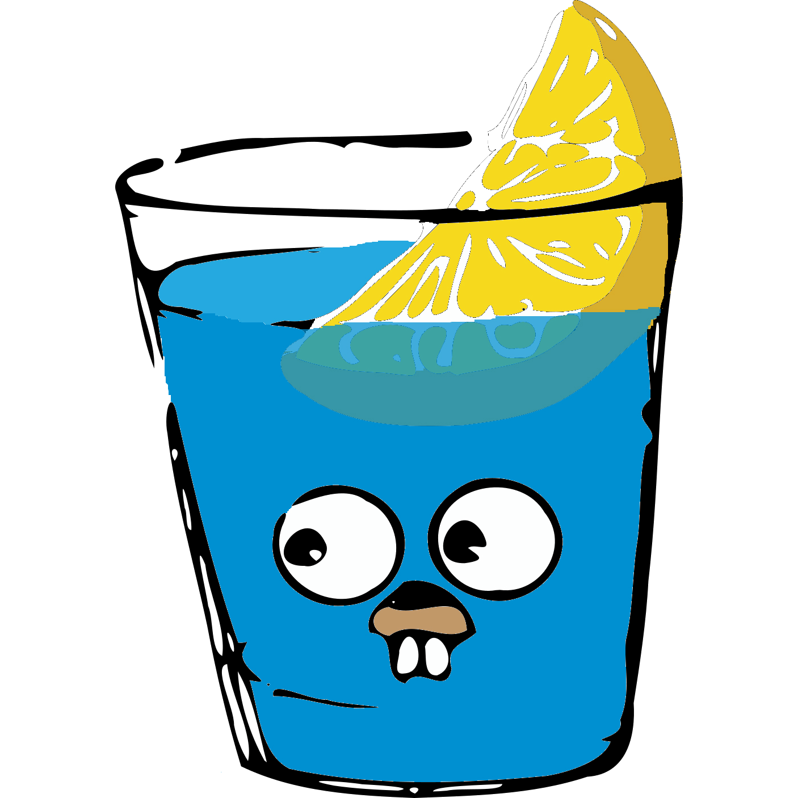

Hellow! My Name is Grant.
Im an 2nd year, Information Technology Student @USU, an Software Engineer intern, and also golang enthusiast. I am a long life learner, who is passionate and eager to learn, a very disciplined person. Have an open-minded, critical and analitical thinking to quick learning something new and solving problem.
Skills
Possesed numerous skills in back-end engineering. Proficient in back-end framework : Gin with Golang, Express.js with Javascript, and Django with Python. Familiar with server and databases such as MySQL, MongoDB, PostgreSQL, etc. Currently honing my skill in Gin and Golang.


Proficient in front-end framework such as : React.js, Vue, and more! Having mild knowledge about some CSS library and framework, ex : Bootstrap, Tailwind. Proficient in JS library for front end such as jQuery, Ember.js, etc.
Passionate in data science and machine learning, expert in python, numpy, matplotlib, etc. Has a grasp knowledge of a lot ML library, ex : Tensorflow, keras, scikitlearn. Currently learning more about machine learning and eager to expand my knowledge.